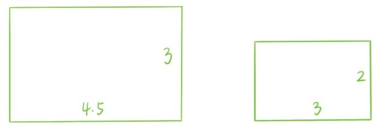
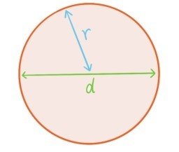
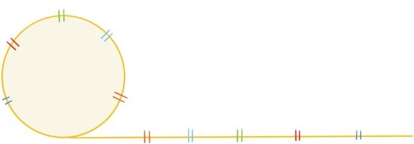
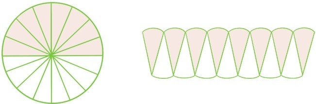

介绍圆之前，先介绍比值的概念。

如果要判断上面这两个长方形形状是否一样，只需判断4.5÷3和3÷2是否相等。我们将两个量相除的结果称为比值。例如4.5÷3就是4.5和3的比值，也记作4.5:3或者。比值的特征是两个量同时乘以一个正数，它们的比值保持不变。表示两个比值相等的式子叫做比例式，比如4.5:3=3:2，6:8=30:40。
比值并不是什么新的概念，但可以使得表述变得简洁。长和宽比值相等的两个长方形形状是一样的，盐和水比值相同的两杯水味道也是一样的。

有用圆规画过圆的读者都应该知道，圆上每个点到圆心的线段长度都是相等的，这种线段称为半径，记作r。连接圆上两点的线段，如果过圆心，就称为直径，记作d，d等于2r。另一个很重要的概念是圆的周长，记作C，就是把圆周拉直成线段的长度。

如果将一个圆放大至3倍，那么直径也变成原先的3倍，周长也变成原先的3倍，将3替换成其他数字也是一样的。所以所有圆的直径和周长的比值都是一样的。写成比例式就是C:d=C':d'，这里d'和C'分别表示另一个圆的直径和周长。
将圆的周长C和直径d的比值称为圆周率，记作π，那么圆的周长公式就是C=πd=2πr。教科书一般会直接告诉学生π=3.1415926…是无限不循环小数。但是难免有学生会问：
问题35：如何计算得出圆周率的近似值？为什么它是无限不循环小数？
这两个问题牵涉的内容和历史非常之多，已经远远超出本书的范围。关于圆周率还有大量有趣深刻的公式和结论，在此仅举一例，希望能让读者眼睛一亮
最后考虑圆的面积。沿着直径将圆分割成形状相同的等份，然后按下图的方式拼成一个近似长方形。

当分割的份数越多，拼成的图形越无限逼近一个长为，宽为r的长方形，因此圆的面积公式就是
S=πr2
提问时间
2.4.1 请判断边长为3厘米的正方形和直径为4厘米的圆，哪个周长更长。
2.4.2 请判断长为6厘米，宽为5厘米的长方形和直径为6厘米的圆，哪个面积更大。
2.4.3 请计算等式
两边的近似值，并比较结果。